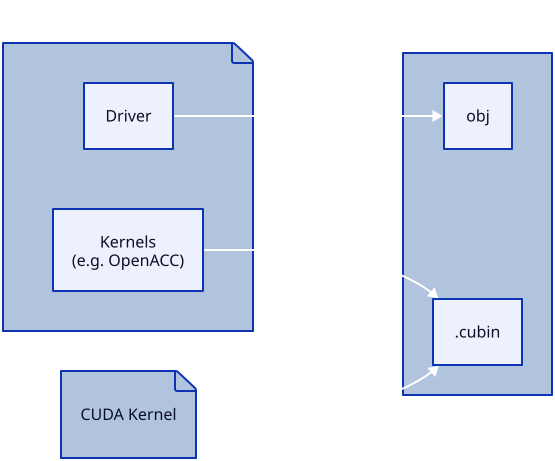
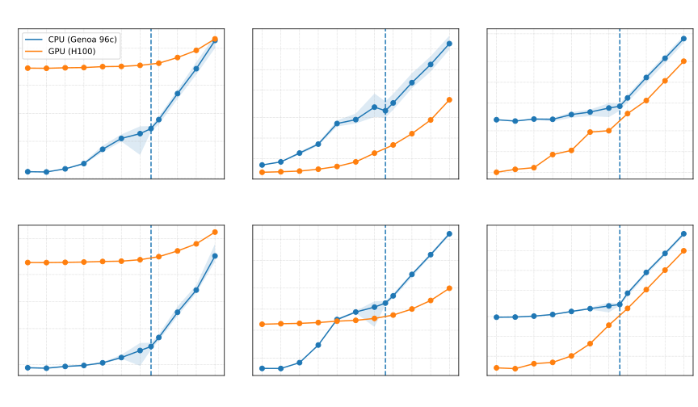
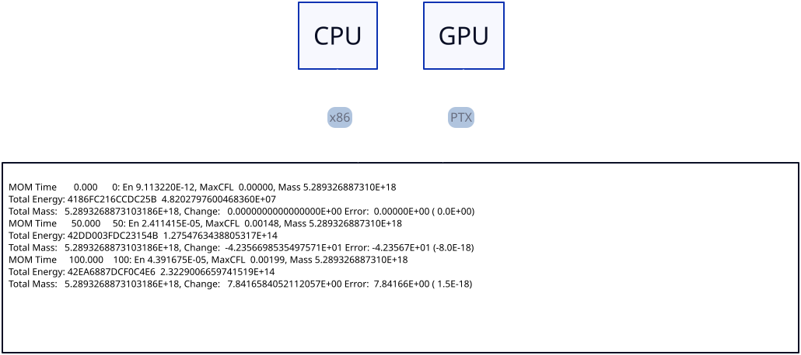
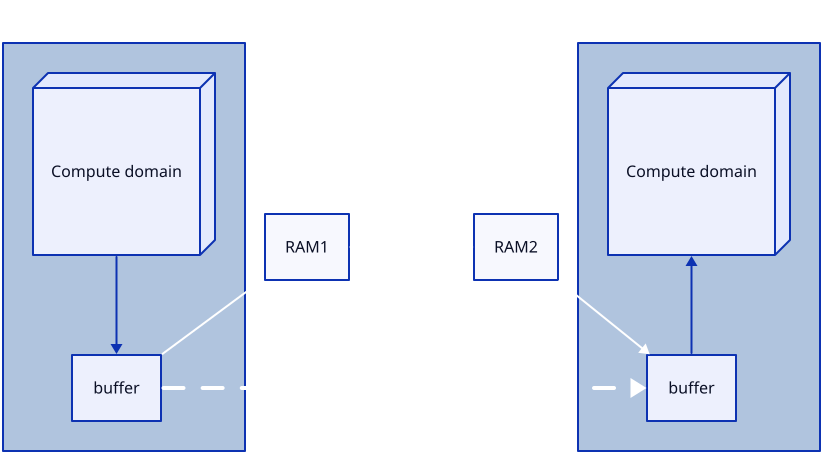
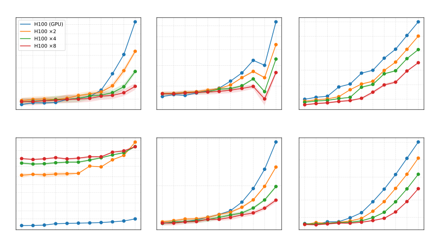
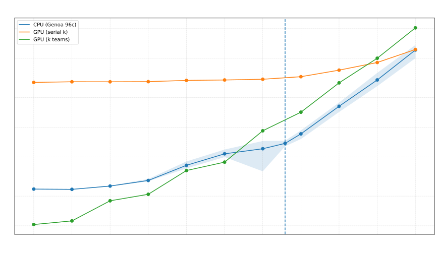

Porting MOM6 to GPUs with OpenMP and Fortran intrinsics
Marshall Ward
NOAA-GFDL
2026-02-28
GPU Programming

do concurrent kernel
CUDA C++
// Define kernel
__global__ kernel(a, b, c, ni, nj, nk) {
i = blockIdx.x * blockDim.x + threadIdx.x;
j = blockIdx.y * blockDim.y + threadIdx.y;
k = blockIdx.z;
a(i,j,k) = b(i,j,k) + c(i,j,k);
}
// Submit kernel
kernel<<<grid, tblock>>>(a, b, c, ni, nj, nk);Fortran do concurrent
do concurrent (k=1:nk, j=1:nj, i=1:ni)
a(i,j,k) = b(i,j,k) + c(i,j,k)
enddoNVIDIA's do concurrent
On GPUs, the do concurrent block
do concurrent (k=1:nz, j=js:je, I=Isq:Ieq)
u_bc_accel(I,j,k) = CAu_pred(I,j,k) + PFu(I,j,k) + diffu(I,j,k)
enddois converted to an OpenACC kernel.
!$acc parallel loop collapse(3) vector_length(128)
do k=1,nz ; do j=js,je ; do I=Isq,Ieq
u_bc_accel(I,j,k) = CAu_pred(I,j,k) + PFu(I,j,k) + diffu(I,j,k)
enddo ; enddo ; enddo
!$acc end parallel loopCUDA threads-per-block is set to 128.
Just Another Kernel

do concurrent rules
Execution may occur in any order.
do concurrent (k=1:nk, j=1:nj, i=1:ni)
a(i,j,k) = b(i,j,k) + c(i,j,k)
enddoCannot use order-dependent operations:
a(i) = a(i-1) + 1sum = sum + a(i)print *, i
But it's also a "contract" to be good (e.g. C's
restrict)
Memory Management
Managed memory chokes on complex codes.
We do manual memory
!$omp target enter data map(to: a, b)
!$omp target enter data map(alloc: c)
do concurrent ..
enddo
!$omp target exit data map(from: c)
!$omp target exit data map(delete: a, b)Grid/Block Mappings
Nested do concurrent can form 2d grids & blocks
do concurrent (j=js:je)
if (present(u_cor)) then
do concurrent (k=1:nz, I=is:ie)
u_cor(I,j,k) = u(I,j,k) + du(I,j) * visc_rem_u(I,j,k)
enddo
endif
enddoFor 256 x 256 x 100, this uses (804,66,1) x (32,4,1)
A second example
256x256x100 layout is (9,64,1) x (32,4,1)
do concurrent (j=js:je)
do k=1,nz
do concurrent (I=is-1:ie)
uhbt(I,j) = uhbt(I,j) + uh0(I,j,k)
ubt(I,j) = ubt(I,j) + CS%frhatu(I,j,k) * u_uh0(I,j,k)
enddo
enddo
enddonj = 64*4 = 256
ni = 9*32 = 288 <- 257 rounded up to next 32-step
serial k is safely moved inside the thread loop
Strategy
- Keep as much on the GPU as possible
- Manual memory management (for now)
- do concurrent where we can
- OpenMP (or OpenACC) where we must
The reality: MOM6
MOM6 is a challenging codebase
- Community code: Heavily nested if-blocks
- Bit reproducible: We don't break people's answers
- Diagnostics: we capture just about every stage
- Algorithmic: MOM is not one solver, it is dozens
- Large codebase: Rewrites impede development
Breakdown
- Over 1000 LoC
if-blocks for dozens of features- Heavy derived type usage
- Function calls within loops
How to deconstruct something like this?
Double-Gyre Test
Describe the model here
- 32x32, 100 level, scaled up
- CPU: Weak scaling to 192, then fixed # of ranks
- GPU: Whatever you get!
CPU: Zen 4 Genoa, 96-core (EPYC 9654)
GPU: H100
The Team
- Me (NOAA-GFDL)
- Ed Yang (ACCESS-NRI)
- Jorge Galvez Vallejo (NCI Australia)
- Utheri Wagura (NOAA-GFDL)
Current Timings

Reproducibility

NVIDIA CPU and GPU give bit-identical results
FMS MPI Support

Message passing FMS buffers are on GPUs
MPI Scaling

Viable Solution?
- Simple syntax: Easy to write and maintain
- Standard Fortran: If it breaks, they must fix!
- Single codebase for CPU and GPU
- Possible "smart" block geometry
But there are limitations
Local arrays
No support yet for local(array), but OpenMP works
!$omp target teams loop collapse(2) private(c1)
do j=js,je ; do i=is,ie ; if (mask(i,j) > 0.) then
b_denom_1 = h(i,j,1) + a(i,j,1)
b1 = 1. / (b_denom_1 + a(i,j,2))
d1 = b_denom_1 * b1
visc_rem(i,j,1) = b1 * h(i,j,1)
do k=2,nz
c1(k) = a(i,j,k) * b1
b_denom_1 = h(i,j,k) + (a(i,j,k) * d1)
b1 = 1. / (b_denom_1 + a(i,j,k+1))
d1 = b_denom_1 * b1
visc_rem(i,j,k) = (h(i,j,k) + a(i,j,k) * visc_rem(i,j,k-1)) * b1
enddo
do k=nz-1,1,-1
visc_rem(i,j,k) = visc_rem(i,j,k) + c1(k+1) * visc_rem(i,j,k+1)
enddo
endif ; enddo ; enddoFunctions on GPUs
Use !$omp declare target in specification
subroutine gradKE(u, v, KE, KEx, KEy, k, G, GV)
!$omp declare target
type(ocean_grid_type), intent(in) :: G
!< Ocean grid structure
type(verticalGrid_type), intent(in) :: GV
!< Vertical grid structure
real, intent(in) :: u(:,:,:), v(:,:,:)
!< Zonal and meridional velocity [L T-1 ~> m s-1]
real, intent(out) :: KE(:,:)
!< Kinetic energy per unit mass [L2 T-2 ~> m2 s-2]
real, intent(out) :: KEx(:,:), KEy(:,:)
!< Acceleration due to kinetic energy gradient [L T-2 ~> m s-2]
integer, intent(in) :: k
!< Layer number to calculate for
integer :: i, j, is, ie, js, je, Isq, Ieq, Jsq, Jeq, nz, n
!! Can also be declared here
is = G%isc ; ie = G%iec ; js = G%jsc ; je = G%jec ; nz = GV%ke
Isq = G%IscB ; Ieq = G%IecB ; Jsq = G%JscB ; Jeq = G%JecB
do concurrent (j=Jsq:Jeq+1, i=Isq:Ieq+1)
KE(i,j) = ( ( (G%areaCu( I ,j)*(u( I ,j,k)*u( I ,j,k))) + &
(G%areaCu(I-1,j)*(u(I-1,j,k)*u(I-1,j,k))) ) + &
( (G%areaCv(i, J )*(v(i, J ,k)*v(i, J ,k))) + &
(G%areaCv(i,J-1)*(v(i,J-1,k)*v(i,J-1,k))) ) )*0.25*G%IareaT(i,j)
enddo
do concurrent (j=js:je, I=Isq:Ieq)
KEx(I,j) = (KE(i+1,j) - KE(i,j)) * G%IdxCu(I,j)
enddo
do concurrent (J=Jsq:Jeq, i=is:ie)
KEy(i,J) = (KE(i,j+1) - KE(i,j)) * G%IdyCv(i,J)
enddo
end subroutine gradKE
(although compiler does this automatically)
Function Inlining
Functions with derived type input do not inline

Replacing arguments is significantly faster!
Objects on GPUs
Dynamic object-oriented structures are volatile
class(EOS_base), allocatable :: typeprocedure(i_density), deferred :: densityreal elemental function density_linear(this, T, S, p)
class(EOS), intent(in) :: this
real, intent(in) :: T, S, p
density_elem_linear = this%Rho_T0_S0 + this%dRho_dT * T &
+ this%dRho_dS * S + this%dRho_dp * p
end function density_linearBut this is not a problem unique to Fortran.
Derived Type Alloc
TODO
Arrays in derived types should be handled separately (no deep copies).
And !$omp target update (CS) can clobber existing array
pointers, be careful!
Async kernels


Using async allows kernel overhead of one kernel to
overlap with another.
Async speedup

Upcoming challenges
- The next milestone (
benchmark) touches many of the above issues. - We cannot write diagnostics! MOM6 has a complex diagnostic manager which will require complex design decisions.
- ...?
Why Pursue?
- It's working. Numbers are competitive and still improving.
- Reproducible. Operational models can continue.
- Leverage Fortran's history to trust the compiler.